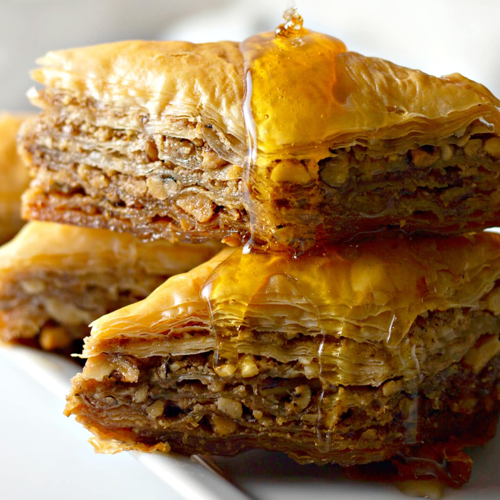

Greek Baklava
This recipe for Greek Baklava will change the way
you view baklava - it will leave you wanting more and
is sure to be a hit among friends and family!

Ingredients
Dough: You’ll find this in the freezer section of your grocery
store, usually alongside the frozen pie crust and puff pastry.
Honey: Use your favorite honey—any kind will do!
Water: To thin the syrup to the correct consistency.
Granulated Sugar: Along with the honey, the sugar adds
sweetness, and it also boils down with the water to help
create the candy-like syrup.
Fresh Lemon Juice: For this recipe, it’s best to juice
fresh lemons for the brightest lemon flavor.
Walnuts: You’ll want to chop or process the walnuts to a chunky consistency,
that’s not too coarse or too fine.
Butter: For brushing between the sheets of phyllo dough. That gives the baklava a flaky texture!
Steps
- Prep the Oven and Filling: Preheat your oven to 325ºF degrees. Then, combine the finely
chopped walnuts and cinnamon in a medium bowl
and set aside.
- Make the Syrup: Combine the sugar, water, honey, and lemon juice in a
saucepan, and bring it to boil a over medium-high heat,
stirring often, until the sugar is dissolved. Once that happens, reduce
the heat to low, and let the syrup simmer (this time without stirring) for exactly
four minutes. Now the syrup is done! Turn the heat off, and set the
syrup aside to cool down while we “build” the baklava.
- Prep the Baking Dish and Phyllo Pastry: Grease a 13 x 9-inch glass baking
dish with 1 tablespoon of the melted butter. Open the phyllo pastry dough package.
If it looks like your phyllo sheets are too large for your pan, you can cut the
whole stack to fit, using a sharp knife or kitchen shears. Cover the phyllo sheets
with a damp tea towel or paper towel, so that they don’t dry out while
you’re working with them.
- Layering Baklava: Make the First Layer. Lay one sheet of the phyllo dough into the
bottom of the buttered dish. Gently brush with a thin layer of melted butter.
Repeat this with nine more sheets of phyllo, to make a stack of 10 sheets with
melted butter in between. Evenly sprinkle about 3/4 cup of the chopped nut
mixture over the top of the stack.
- Make the Remaining Layers: Lay a stack of 5 sheets of phyllo dough over the walnut mixture,
brushing each sheet with a small amount of butter as you go. Sprinkle another ¾ cup of the
walnut mixture over the stack. Repeat the layers of 5 buttered phyllo sheets and 3/4 cup of
topping, until walnut mixture is used up. Then top the whole thing with 10 last sheets of phyllo
dough, brushing butter on each as you add them.
- Brush and Bake: Brush the last layer with butter, and then slice the baklava into one-and-a-half inch
strips across, then diagonally. You should have classic diamond-shaped baklava.
Bake this uncovered for an hour and 25 minutes or so, until the pastry is golden-brown.
- Add the Syrup: After the baklava has baked, take
it out of the oven, and pour the syrup over it slowly and gently, trying
to get an even pour over the entire dish. Most of the syrup will run down to
the bottom, which is what it is supposed to do! But some of it will trickle into the
top layers as well. You’ll end up with a lightly sweet and crispy top, with a sweeter
and more dense bottom layer. Let the baklava cool completely
(and ideally rest overnight) before serving.